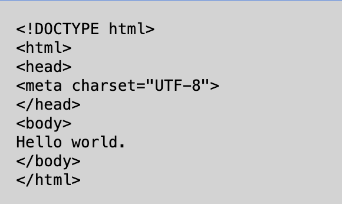

Databaser
Databaser er fundamentale redskaber inden for datamanagement, der tillader os at organisere, lagre og administrere data på en struktureret måde.
Inden for emnet er der en række keywords:
- Primær Nøgle
- Entiteter
- Attributter
- Fremmed Nøgle (også kaldet Sekundær Nøgle)
- Relationer
En primær nøgle er en unik identifikator for hver række i en database, hvilket muliggør entydig identifikation. Dette kan f.eks. være KundeID.
Attributter er egenskaber eller karakteristika, der beskriver dataene i en database, f.eks. navn, alder eller adresse.
En fremmed nøgle er en attribut i en tabel, der refererer til den primære nøgle i en anden tabel, hvilket etablerer forbindelser mellem forskellige tabeller.
Relationer definerer interaktionerne mellem forskellige tabeller i en database og kan være en-til-en, en-til-mange eller mange-til-mange, hvilket hjælper med at organisere og strukturere dataene effektivt.
Mig, Elmer og Tristan har lavet et "Gæt et dyr"-spil, hvor vi har gjort brug af Html, Javascript og databaser.
Du kan prøve det her!
eksempel på dokumentation af kode
Nedenstående er en den simpleste kode til en hjemmeside indsat som billede
